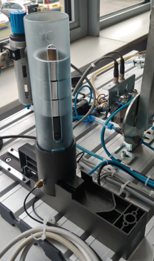
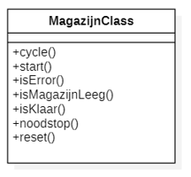

Thema: Statemachine Programming
Context: Bekermagazijn
In deze opdracht ga je het bekermagazijn Object Georiënteerd programeren in afzonderlijke toestanden

Bekermagzijn Realworld

Bekermagzijn Simulatie
Besturingseisen
De volgende besturingseisen zijn aan de orde:
Na opstarten programma gaat groene-lamp branden
Na drukken op “start” wordt 1 beker uitgestoten
Alleen als het magazijn niet leeg is
Gedurende het uitstoten is groene-lamp uit *Als magazijn leeg is zal gele-lamp oplichten *Als gestart wordt als magazijn leeg is zal rode-lamp oplichten en groene lamp uitgaan. Het systeem gaat in de “Error” *De “Error” situatie kan worden opgelost door het geven van een Reset
Na de Reset gaat de rode-lamp uit en de groene-lamp aan
Als er op de “noodstop” wordt gedrukt worden alle actuatoren (direct) gedeactiveerd en gaat het systeem in “Error”
Opdracht 1 Simulatie
Maak eerst een testspecificatie
Maak een object-georiënteerd structured-tekst programma van de beschreven besturingseisen.
Ga uit van de hieronder getoonde klassendiagram van het magazijn

In het programma is de structuur van een toestanden machine herkenbaar.
De memberfuncties van de MagazijnClass
Deze kun je terugvinden in de opdracht over het thema object-georiënteerd programmeren
De toestanden van de MagazijnClass
In onderstaande afbeelding is het UML state-dagram weergegeven van de toestanden met toestand-transities waarin de magzijnClasse zich kan bevinden.

Tips voor de opdracht
Maak hiervoor gebruik van het voorbereide Codesys project:
“Magazijn Structured Text 2V1 - Statemachine-programming.project”
Download: https://github.com/AvansMechatronica/Codesys_IAP.git
Zie map: Opdrachten\IAP
Het hoofdprogramma “MagazijnTest” POU is al geheel voorbereid in hoef je niet meer te wijzigen
De klasse “magazijnClass” is in de “MagazijnTest” POU afgeleid als “magazijn” object.
Let op: Wijzig in geen geval de code in de map Simulatie
Maak de klasse “MagazijnClass” compleet
Maak eerst de member functies, denk na over
Parameters/variabelen
Return waardes
Maak de code voor alle memberfuncties van de klasse compleet
Let op: De magazijn toestanden/states zijn al voorbereid in de “magazijnStates” enumeratie.
Test simulatie de simulatie aan de hand van je testspecificatie
Opdracht 2 Realworld
Om het programma te testen in realworld wordt er gebruik gemaakt van één van de PLC opstellingen met een bekermagazijn.
Configureer de inputs en outputs van de Hitachi PLC
Zoek de juiste IO op in de documentatie van de PLC opstelling
Gebruik het programma (“main” POU) uit deze opdracht (simulatie) om de werking te testen
Test de functionaliteit van het programma aan de hand van je testspecificatie
Opdracht 3 HMI
Integreer de HMI die je hebt gemaakt bij het thema object-georiënteerd programmeren in het huidige programma.
Test bovenstaande integratie
Opdracht 4 Referenties naar IO
In de MagazijnClass zul je waarschijnlijk koppelingen naar I/O doen via de GVL variabelenlijst.
Nadeel: de klasse is niet toepasbaar in situaties waarin de
GVL variabelenlijst andere benamingen heeft voor IO
Er meerder instanties zijn van de class voor meerdere fysieke magazijnen
Oplossing: Het toepassen van referenties naar de IO van de klasse, zie hieronder in de attributenlijst van de klasse

Tips voor de opdracht
Pas de magazijnClass aan:
Maak de referenties zoals aangegeven in het klassediagram aan in de attributenlijst van de MagazijnClass in codesys
Vervang alle verwijzingen in de MagazijnClass naar de GVL variabelenlijst door de verwijzingen naar de gedefinieerde referenties
Wijzig in de magazijnClass de initialaize() memberfunctie zodanig dat de referenties van de IO geintialiseerd kunnen worden vanuit het hoofdprogramma
Pas het “MagazijnTest” POU aan
Maak een aanroep naar de initialiaze() memberfunctie van de magazijnClass (het afgeleide object), waarbij de IO door wordt gegeven doormiddel van referenties
Test het programma aan de hand van je testspecificatie.
Zie voorbeelden uit lesstof op brightspace